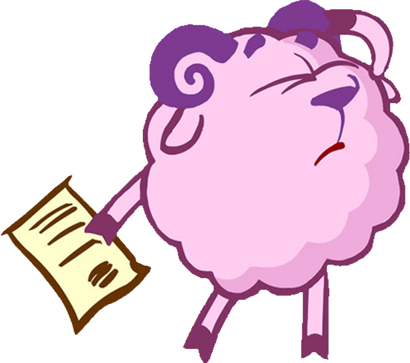
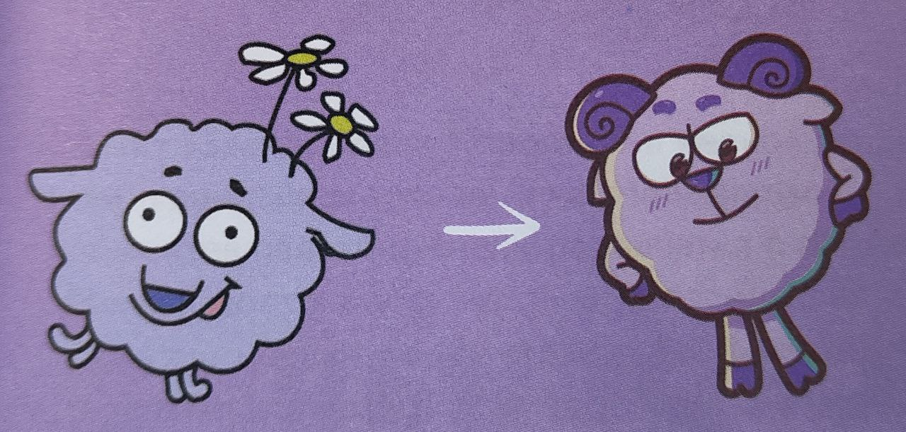
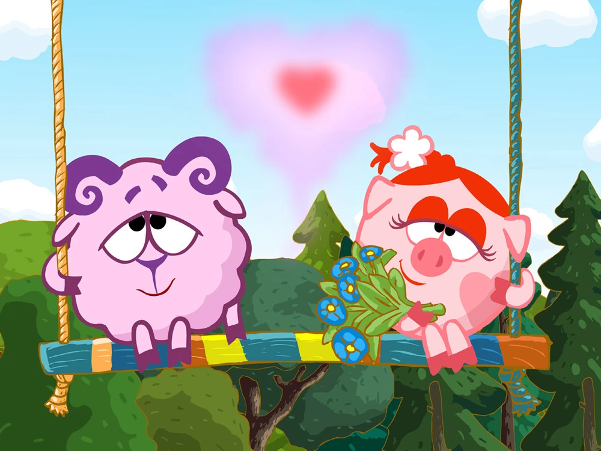

Бараш - один из немногих Сластён, кто не сильно изменился по пути в «Смешарики». Разве что жил он, по первоначальной задумке, в домике. Но были и свои тонкости – корзинке с цветами.

- Сперва Салават нарисовал Бараша на четырёх ногах, рассказывает Денис Чернов, но входе обсуждений мы всё-таки сделали его прямоходящим. Он но единственный из младшего поколения, кто уже определился со своим местом в социуме: быть творческой личностью. Как только мы решили, что Бараш - поэт, стал ясен и характер. Это такой меланхолик, местами мизантроп с холерическими проявлениями. Очень податливый на душевные метания, с элементами философствования и капризами.
- Образ Бараша сложился спонтанно, рассказывает озвучивший его Вадим Бочаров. Я сам пишу стихи, и если есть определённый «драйв» - всё получается. Подходишь к студии, настраиваешься на волну, и вперёд! Сложно в серьёзных, философских эпизодах держать «бараний» тембр. Иногда приходится переписывать реплики, потому что они идут «от себя» в силу важности темы.
Эмоционально неустойчивый овечий сын. Романтик, жаждущий оседлать вдохновение, но оно часто от него ускользает. Порой асоциален, но всегда возвращается в терпеливые объятия друзей. Переключается с пессимизма на приступы жизнерадостности. Не осознает выпавшего на его долю счастья быть отфрендзоненным Нюшей.
В англоязычной версии «Смешариков» его зовут Wally или Fluffy - словом, Пушистик.

С Нюшей у Бараша самые насыщенные отношения. И до, и во время событий основного сериала Бараш влюблён в неё, но возможность признаться в чувствах выпадает ему крайне редко, и даже в такие моменты обязательно происходит то, что вынуждает барана в последний момент замолчать: либо появляются посторонние (очень часто ими оказываются Крош и Ёжик), либо сам Бараш понимает, что ещё не готов к признанию (как было в серии «Роман в письмах»). Зная, что Нюша обожает конфеты, Бараш часто приносит их и, пока свинка наедается, наслаждается её обществом на качелях, совмещая это и с любованием заснеженными горами. Со временем у Бараша с Нюшей всё же завязываются более серьёзные отношения.
В «Легенде о Золотом драконе» центральным героем должен был стать Лосяш. - Что-то совсем не клеилось в таком сюжете, — говорит Денис Чернов. - Взрослому мужику доказывать свою крутизну дело сомнительное.. Решили взять младшее поколение. Ёжик слишком интровертный, Крош – экстравертный. А вот нарциссичный Бараш с вечным экзистенциальным кризисом подошёл идеально.